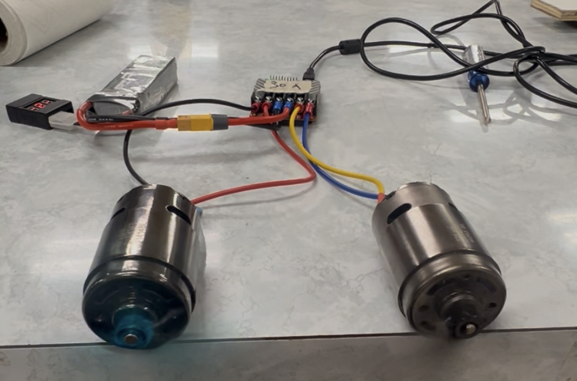
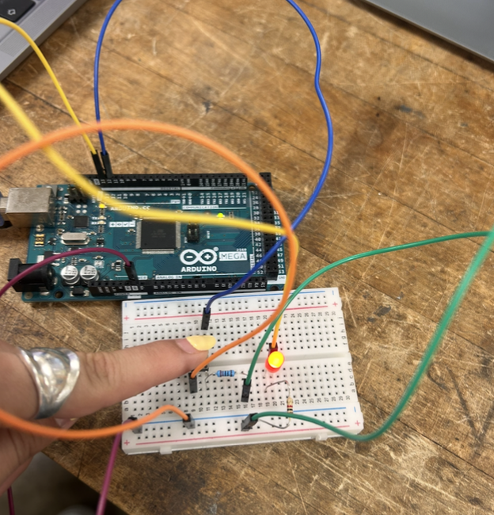

Machining Trophy



This project involved machining a trophy following standard design drawings.
The key components of the project were:
- Water jet cut gear using WaterJet ProtoMAX software
- 3D printed MCE symbol
- Milled base
- Lathed support
- asered acrylic plaque